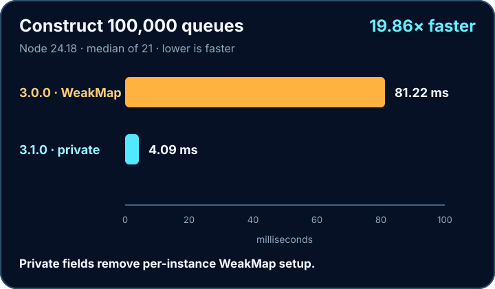
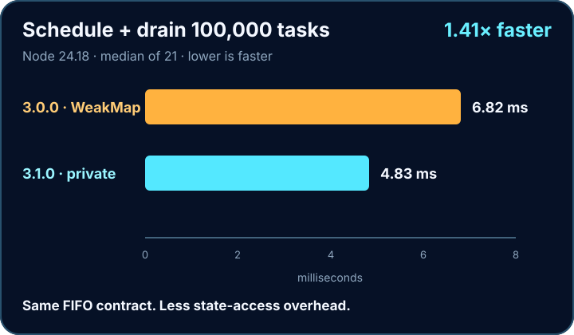

- Docs
- Performance
Private state · less overhead
The fastest js-queue yet.
Install it. Don’t rebuild it.
3.0.0 → 3.1.0
Private fields win.
Same FIFO API. No tuning.


Fastest in this benchmark. Easiest in your code.
Install. Add tasks. Ship.
Reproduce it
One command.
npm run benchmark